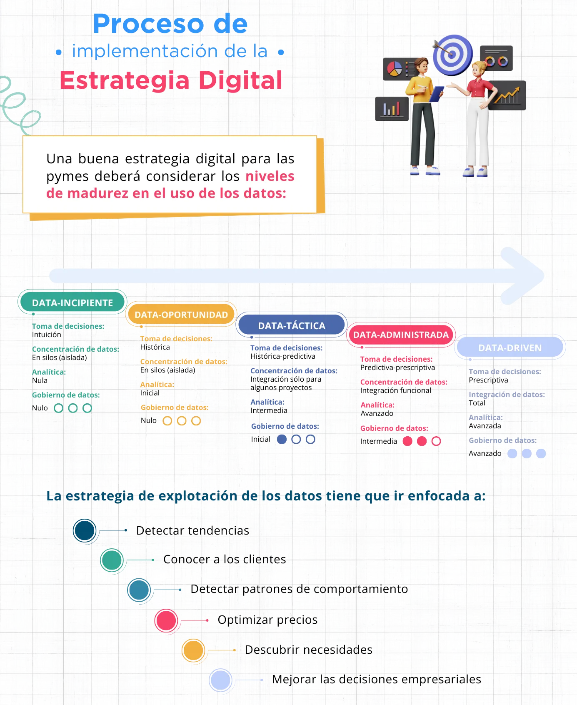

La planeación es el punto de partida para el diseño de una estrategia digital. En este eje temático podrás identificar ¿Qué es una estrategia de datos? y sus principales componentes, así como la importancia de los datos para la toma de decisiones estratégicas como incrementar la eficiencia de los procesos administrativos, aumentar las ventas y rentabilidad de la empresa, anticiparse a las tendencias de comportamiento de los clientes para acercarse a nuevos mercados o incrementar su portafolio de servicios o cumplir con regulaciones.
Para ello se necesita una adecuada identificación de la información de que se dispone y aquella que se puede obtener públicamente (datos abiertos), recolección y análisis de datos, selección de la herramienta más adecuada para la pyme, definir indicadores y resultados clave para su análisis, de la mano de un proceso de adopción de esta cultura hacia adentro de la empresa.
La estrategia digital permite a las empresas adaptarse más rápidamente al entorno en el que se encuentran, a través del uso de una mayor cantidad de datos e información para la toma de decisiones estratégicas.
Así, la planeación es un proceso sistemático indispensable en toda organización que en la era digital exige la incorporación de tecnologías digitales encaminadas a una trasformación que brinde mayor peso a los datos que generen información relevante que a la pyme le permita desarrollar mejoras al negocio y generar valor.
En la era digital, la planeación y la estrategia digital deben estar debidamente articuladas para mejorar la competitividad del negocio, la eficiencia y la productividad, así como optimizar la experiencia del cliente.
Planear es proyectar un futuro deseado y los medios efectivos para conseguirlo” (Russel Ackoff).
De acuerdo con esta premisa, la planeación es un proceso sistemático y fundamental para lograr el éxito del negocio. Tiene como base la definición de objetivos y requiere, precisar las acciones y estrategias para alcanzarlos, así como asignar los recursos para conseguirlos.
La estrategia digital tiene que ver con un plan de acción específico que se enfoca en el uso de la tecnología y medios digitales para crear valor para la empresa.
Por tanto, la planeación y la estrategia digital se convierten en los puntos medulares para lograr el éxito de cualquier negocio.
De acuerdo con Héctor Pérez (2021), una estrategia digital es el uso de las tecnologías, a las que tiene acceso una empresa para el comercio, la publicidad, la promoción de productos o servicios, así como la comunicación y gestión de clientes y prospectos, automatización de procesos, y la explotación de datos a través de la implementación y gestión de herramientas digitales.
La estrategia digital utiliza la tecnología y los medios digitales para generar valor dentro de las empresas, se enfocan en maximizar los beneficios comerciales, a través del análisis de los datos que reciben y generan en su operación utilizando la tecnología que tienen disponible.
Para concretar los beneficios de la transformación digital, hay que planificarla ordenadamente y esto también supone una serie de retos y dificultades para las pymes, entre los que destaca:
Hay que avanzar siguiendo un plan que, para ser exitoso, debe conectar con el negocio y convertirse en la herramienta para que las empresas alcancen su mayor potencial y se consoliden de mejor forma en el mercado. Por ejemplo, si uno de los objetivos estratégicos de la empresa es la retención de clientes, a través de las herramientas y fuentes adecuadas de explotación de datos, es posible identificar a los clientes que sería más fácil retener, las razones por las que un cliente quiere quedarse con la empresa, las características de los clientes que a la empresa le conviene retener, por citar algunos. A partir del análisis de esta información la empresa puede tomar decisiones y crear estrategias comerciales acordes con sus objetivos.
La alineación estratégica del negocio y de la transformación digital permite potencializar los resultados, elevando la productividad de los recursos tecnológicos.
El primer paso para una crear una estrategia digital exitosa es alinearla a los objetivos estratégicos e identificar cómo es que éstos se pueden potenciar a partir de las herramientas digitales, algunos ejemplos de objetivos son: aumentar las ventas, fidelizar a los clientes, llegar a nuevos mercados y mejorar la posición de la marca, por mencionar algunos. En otras palabras, lo primero es saber qué se busca con la transformación digital. Hay que recordar que la tecnología es un medio, no un fin en sí misma. Entonces hay que definir objetivos claros con una perspectiva temporal bien definida.
De igual forma, es necesario conformar equipos multidisciplinarios para hacer un análisis diagnóstico, identificar dónde se encuentran y hacia dónde se quiere llegar; para ello existen diversas herramientas, como el análisis FODA, la lluvia de ideas, consulta con especialistas, por citar algunas. Es fundamental conocer el mercado, la competencia y el público objetivo al que se dirige la empresa, así como las capacidades digitales existentes internamente, lo cual es básico para identificar las oportunidades, las amenazas, las fortalezas y las debilidades.
El resultado de este ejercicio debe ser un diagnóstico del contexto digital en el que se sitúa la empresa, sus clientes, competidores, etcétera, así como de la situación interna de la empresa en términos de sus habilidades digitales.
El resultado del diagnóstico permitirá ubicar dónde se encuentra la empresa y en conjunto con la alta dirección se deberá realizar la planeación y la estrategia digital; definir el alcance que tendrá la implementación de la estrategia digital, es decir fijar a dónde se quiere llegar para, una vez puesta en operación, se midan los resultados, para su posterior implementación y ponerla en operación y tras un tiempo pertinente, volver a empezar el ciclo para incorporar mejoras y nuevas herramientas.
De acuerdo con el documento Economía de los datos Riqueza 4.0 (Emilio Ontiveros, 2017)se entiende por este concepto a “… el conjunto de iniciativas, actividades y/o proyectos cuyo modelo de negocio se basa en la exploración y explotación de las estructuras de bases de datos existentes (tradicionales y procedentes de nuevas fuentes) para identificar oportunidades de generación de productos y servicios”.
A partir de los datos, se pueden identificar insights. En términos de negocio los insights son aquellos hallazgos relacionados con la comprensión de cómo funciona el negocio, es decir el conocimiento que aporta valor a las empresas, en sus diferentes ámbitos: clientes, procesos, mercados, etc. A partir de este conocimiento, las empresas lograrán crear, modificar y replantear sus objetivos y estrategias para ser más competitivas y eficientes, así como innovadoras en términos de mercados, productos y procesos.
Para poder crear insights, es necesario observar el comportamiento de las personas ante ciertas situaciones relacionadas con el negocio; por ejemplo, una empresa de streaming podría llevar el registro de cada cuánto tiempo los usuarios detienen la reproducción de los contenidos, lo que podría traducirse en identificar un patrón de comportamiento para colocar los anuncios previo a que se den los cortes promedio y, de esta forma, garantizar a los anunciantes una mayor audiencia, que permita cierto nivel de precio de los espacios publicitarios.
Conforme es posible explotar mayor cantidad de datos y correlacionarlos, es más sencillo encontrar patrones de conducta de los diferentes actores para facilitar la toma de decisiones en beneficio de la empresa.
Se entiende como dato a la representación simbólica de los hechos que están ocurriendo en el mundo; estos hechos individuales pueden ser agregados, para su análisis y utilización para la toma de decisiones estratégicas, tanto por las empresas como por los gobiernos. (DAMA International, 2020). En la actualidad, la mayoría de los datos se recolectan y almacenan electrónicamente, por lo que contar con herramientas que permitan su adecuada explotación se está convirtiendo, cada vez más, en una necesidad para las empresas de cualquier tamaño.
En la actualidad, los datos están considerados como un activo de las organizaciones, cuya correcta explotación y transformación permite a las pymes competir contra empresas de mayor tamaño de forma más equitativa. Por ello se considera relevante que las empresas incorporen la cultura del uso de los datos de manera paulatina, hasta convertirse en empresas data-driven, es decir guiadas por los resultados de la explotación de los datos.
A partir de la explotación de los datos, la empresa obtiene la información que le permite plantear nuevos objetivos o replantear los existentes, enfocándose a los puntos clave que han sido mencionados en la sección anterior.
La identificación de los datos contribuye a alinear los datos, procesarlos y transformarlos en información, de acuerdo con las necesidades estratégicas del negocio, para ello se sugiere tomar en cuenta lo siguiente: (Steenbeek, 2018)
Lo que no se mide no puede mejorar o corregir, es por eso que una parte importante para todas las empresas es establecer indicadores e identificar métricas, las métricas son los valores numéricos que se desprenden de la operación del negocio, por ejemplo el costo de los insumos, el costo por click cuando se hace publicidad en medios digitales, saber cuántas personas visitan las redes sociales del negocio, qué contenidos, cuantas de ellas compran, cuánto cuesta traer un nuevo cliente, por mencionar algunos.
Los indicadores más comúnmente usados por las empresas son los conocidos como Indicadores clave de desempeño mejor conocidos como KPI (Key Performance Indicator, por sus siglas en inglés). Los indicadores permiten identificar el avance o desviación respecto de los objetivos de la empresa y el correcto funcionamiento de la organización, de acuerdo con su estrategia, a fin de que se puedan hacer ajustes de forma ágil y oportuna. Algunos ejemplos de indicadores son: retorno sobre la inversión (ROI), tasa de ganancia, tasa de clicks (CTR) que es la cantidad de clicks que un anuncio recibe dividida entre la cantidad de veces que se muestra. Los indicadores dependen de qué se haya trazado como objetivo.
En el caso de los datos biométricos y personales, estos deben de ser salvaguardados y protegidos conforme las normativas aplicables en cada país, para lo cual las empresas deben generar políticas de acceso y consulta a los datos personales, que impidan vulnerar la intimidad de las personas o el mal uso de la información, ya que, en caso contrario, podrían constituir violaciones consideradas como delito.
Las fuentes de datos tienen también diferente naturaleza, de acuerdo con las siguientes categorías (Aguilar, 2019):
Una vez que se tienen identificadas las fuentes de datos, y su naturaleza, es importante decidir las herramientas que se utilizarán para transformarlos en información, tales como:
Es importante seleccionar correctamente los datos e identificar la herramienta a utilizar, para obtener resultados más acertados. Idealmente los datos deben cumplir las siguientes características:
Los modelos de datos son recursos que le permiten a una compañía identificar y documentar los datos que posee, describir la forma en estos se emplean, sus características para poder ordenarlos, analizarlos, explotarlos y transformarlos en información útil.
Los modelos de datos se clasifican como:
En estos se define la estructura general del negocio y sus datos, es el primer paso para identificar las fuentes de datos y cómo estos interactúan en los diferentes procesos de la empresa. Permiten mostrar la perspectiva de la empresa.
Permiten identificar los atributos de los datos, y su relación, utilizan herramientas visuales para la ejecución de procesos específicos.
Permiten visualizar la estructura de las bases de datos antes de su construcción, facilitan la identificación de relaciones primarias entre los datos y detallan el modelo lógico. Representan las tablas, las columnas, los tipos de datos, las vistas, las restricciones, los índices y los procedimientos dentro de la base de datos o la información comunicada durante los procesos informáticos.
Aguilar, L. J. (2019). La inteligencia de negocio y analíticia de datos. (págs. 20-22). Alfaomega Gurpo Editor México.
DAMA International. (2020). La guía del conocimiento para la gestión de datos (DAMA-DMBOK2). Technics Publications.
Emilio Ontiveros, V. G. (2017). Economía de los datos Riqueza 4.0. Madrid: Ariel.
RAE (2023). Diccionario. Recuperado de https://dle.rae.es/algoritmo
IBM. (2023). ¿Qué es machine learning? Recuperado de https://www.ibm.com/mx-es/analytics/machine-learning
Joyanes A., L. (2015). Sistemas de información en la empresa. Editorial AlfaOmega (págs. 189-209), 590 p.
Marqués, F. (2018). Selección, Exploración, Limpieza y Transformación en Minería de Datos a Través de IBM SPSS Statistics. Independently Published.
Perez, H. (2021). ¿Cómo construir una estrategia digital para tu empresa? Recuperado de LinkedIn. Recuperado de https://www.linkedin.com/pulse/c%C3%B3mo-construir-una-estrategia-digital-para-tu-empresa-perez/?originalSubdomain=es
Steenbeek, I. (2018). DATA MANAGEMENT. Data Crossroads.
Westreicher. (2021). Economipedia. Definiciones Recuperado de https://economipedia.com/definiciones/estrategia.html
Colaboradores de Wikipedia. (2023). Definiciones. https://es.wikipedia.org/wiki/Wikipedia:Portada